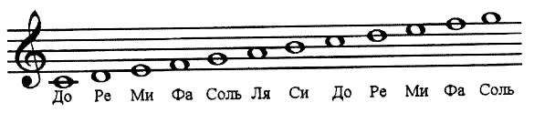

Существует достаночно стойкий стереотип, что изучение нот в музыке – это трудный, нудный и долгий процесс, а чтобы научиться играть по нотам необходимо посещать музыкальную школу. Из-за этого надуманного препятствия (страха) многие люди не могут открыть для себя захватывающий и чувственный мир музыки разных эпох, ведь навык чтения нот позволяет играть как старинную музыку, так и современные композиции, что существенно расширяет «музыкальные горизонты».
Чтение нот не сложнее чем игра в тетрис и вы узнаете, что профессиональные музыканты играют 2 раза: на своём инструменте и в игру под названием чтение нот с листа…
Правила игры
Передначалом любой игры неплохо бы узнать её правила, а правила просты:
Нота – это графический знак, обозначающий звук.
Все ноты пишутся в специальном поле (на нотном стане, состоящем из 5 горизонтальных линий) на линиях и между ними.
Одной из характеристик звука является его высота.
Чем выше записана нота, тем выше звук, который она обозначает.
Есть также добавочные линии сверху и снизу. Ноты имеют свои названия.
Основных названий нот 7 (до, ре ми, фа, соль, ля, си) и они повторяются образуя октавы (отрезки, между 2 повторяющимися по названию нотами).
Одинаковые по названию ноты, принадлежащие к разным октавам имеют разную высоту и записываются на разных линиях (или между ними) нотного стана.
На инструменте (например, гитара (на одной струне) или рояль) звуки располагаются последовательно с низких до высоких и могут охватывать неслольно октав (у рояля 7 полных и 2 неполных октавы).
До
Ре
Ми
Фа
Соль
Ля
Си
C
D
E
F
G
A
H
В музыке существует несколько ключей, они приписывают ноте, расположенной на определенной линейке нотного стана её название и октаву (например, скрипичный ключ обозначает, что нота записанная на 3 линейке нотного стана - это нота соль 1 октавы).
Ключ ставится в начале нотного стана. На одной и той же линейке в разных ключах записываются разные по названию ноты.
Начнем игру с ноты до 1 октавы (потом можно брать любую другую ноту). Для этого нужно:
Увидеть в нотах ключ и узнать, где в этом ключе находится нота до 1 октавы, запомнить её расположение на нотном стане в этом ключе (это единственная нота на первоначальном этапе, которую нужно запомнить). Найти эту ноту на инструменте (чтобы найти ноту на инструменте узнайте его строй) и узнать принцип расположения нот.
Это отправная точка.
Внимательно посмотреть на ноты и выделить карандашом ноты, идущие последовательно одна за другой и увидеть, где есть скачки через несколько линеек.
От ноты до 1 октавы играть такую же последовательность на инструменте, как видите в нотах (не нужно выяснять название каждой ноты в последовательности и соотносить с расположением на инструменте, как учат в некоторых музыкальных школах).
Постепенно в процессе игры по мере привыкания запоминать по 1 новой ноте. В итоге ноты запомнятся легко и непринужденно, но читать их вы всё равно будете в виде последовательностей.
Знание же названий нот, их расположение на нотном стане и на инструменте необходимо лишь чтобы быстро находить начальную точку отсчёта, а потом всё играется последовательно. Нужно лишь привыкнуть видеть последовательности и скачки.

Переходим на новый уровень
В игре существует несколько уровней:
Научиться видеть и играть на инструменте последовательности нот, идущие подряд.
Научиться видеть последовательности нот, идущие через несколько линеек. Просто сами напишите себе последовательности и тренируйтесь в различных их вариациях либо возьмите самые простые ноты выделите в них эти последовательности.
Играйте последовательности от разных нот и в разных ключах.
Для приобретения навыков по чтению нот хорошо подходит рояль или пианино, так как он имеет большой диапазон, ноты для него записываются в 2 ключах, очень наглядно расположены в одну линию по октавам.
В чтении нот с листа важно с самого начала обращать внимание на метроритмическую составляющую. По мере повышения уровня в игре вы изучите названия и обозначение дополнительных нот, новые ритмические рисунки и новые тональности.